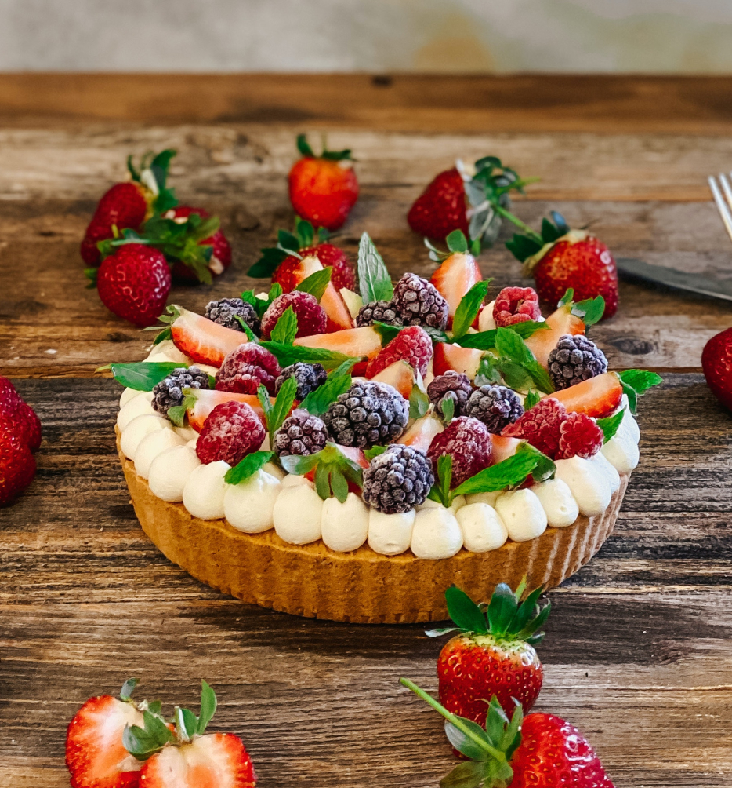

Our World Famous
Fruit Tart Recipe
Ingredients:
Pastry Cream:
- 2 cups whole milk
- 1 cup granulated sugar
- 6 egg yolks
- 1/4 cup cornstach
- 1/4 tsp. salt
- 1 tsp. vanilla extract
Tart Dough:
- 7 tbsp butter, softened
- 1/2 cup powdered sugar
- 1 egg
- 1/2 tsp. vanilla extract
- 1/4 tsp. salt
- 1 1/4 cup all-purpose flour
- 1/4 tsp. baking powder
Fruit Tart:
- 1 pint fresh cut fruit

Instructions
To make Pastry Cream:
- In a medium non-aluminum saucepan over medium heat, heat milk until tiny bubbles appear on the surface, about 6 to 8 minutes (180 degrees). Stir to prevent scalding.
- In a large bowl, whisk together egg yolks and sugar. Whisk in cornstarch and salt. While whisking constantly, pour in half of the hot milk. Whisk in remaining hot milk and return to saucepan.
- Cook over medium heat, whisking constantly, until the mixture thickens to a firm consistency, about 5 to 8 minutes. Whisk in vanilla and pour in to a bowl.
- Cover with plastic wrap, pressing it directly on to the surface of the pastry cream. Refrigerate until chilled, about 2 to 3 hours.
To make Tart Dough:
- In a standing mixer fit with the paddle attachment, or with an electric mixer by hand, cream the butter and powdered sugar together on medium-high speed until pale and fluffy, about 3 minutes.
- Scrape down the sides of the bowl and add egg. Continue mixing until combined, scraping down the bowl as necessary. Add vanilla and salt and mix until combined.
- Reduce mixer speed to low. Add flour and baking powder and blend until the dough comes together (do not over-mix). Scrape dough onto a piece of plastic wrap. Wrap tightly and chill at least 1 hour.
To blind-bake Tart Crust:
- Preheat oven to 350 degrees. On a lightly floured surface, roll out dough to a thickness of 1/8-inch to 1/4-inch. If the dough crumbles or breaks apart, press it back together with your fingertips.
- Loosely roll the dough around the rolling pin, then gently unroll it over the tart pan, preferably with a removable bottom (9 inches, or substitute a pie plate).
- Press the dough firmly into the bottom of the pan and up the sides. Trim any excess dough. Cover the dough with parchment paper or foil. Fill with pie weights or dried beans. Bake 12 minutes.
- Remove pie weights or beans and parchment paper or foil. Return to oven and bake until golden brown and fully cooked, about 10 to 15 minutes longer. Cool completely.
To assemble the Fruit Tart:
- Fill cooled tart crust with chilled pastry cream. Arrange fruit in a decorative pattern.